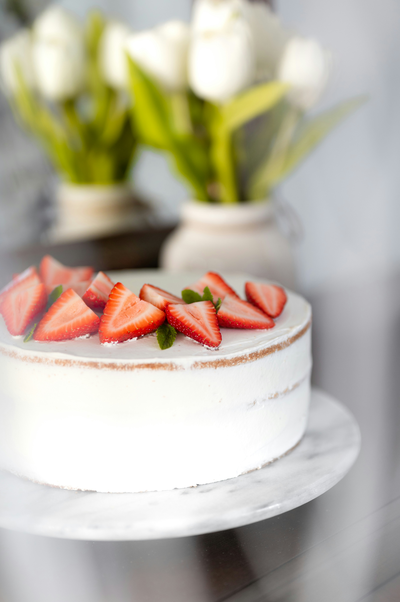

Strawberry Sponge Cake 🍓🎂
A light, fluffy, and delicious strawberry sponge cake — perfect for any occasion!
Ingredients

- 4 large eggs
- 120g granulated sugar
- 120g cake flour
- 1 tsp vanilla extract
- 1 tbsp unsalted butter, melted
- 2 tbsp milk
- 200ml heavy cream
- 2 tbsp powdered sugar
- 1 cup fresh strawberries, sliced
Equipment
- Mixing bowls
- Whisk or electric mixer
- Sifter
- Baking pan
- Parchment paper
- Oven
Time Estimate
- Preparation: 20 minutes
- Baking: 25-30 minutes
- Cooling: 30 minutes
- Decoration: 10 minutes
- Total: ~1.5 hours
Instructions
- Preheat oven to 170°C (340°F) and line a round cake pan with parchment paper.
- In a large bowl, beat eggs and sugar until light and fluffy.
- Sift in the cake flour and gently fold to combine. (Batter should look smooth and ribbon-like.)
- Mix in vanilla extract, melted butter, and milk.
- Pour the batter into the prepared pan and bake for 25–30 minutes.
- Let the cake cool completely before slicing into two layers.
- Whip heavy cream, powdered sugar, and vanilla until stiff peaks form.
- Spread whipped cream over one sponge layer, add sliced strawberries, then top with the second layer.
- Cover the cake with more whipped cream, decorate with strawberries, and enjoy!
Storage Tips
- Store in an airtight container at room temperature for up to 1 day.
- Refrigerate for up to 3 days; bring to room temperature before serving.
Recipe Source
Original Recipe from Sally’s Baking Addiction
Sample Imagery


Recipe Website References
Non-Recipe Website Inspirations
- Apple – Minimalist, clean design.
- Airbnb – Large, immersive visuals.
- Pinterest – Grid layout and visually engaging content.